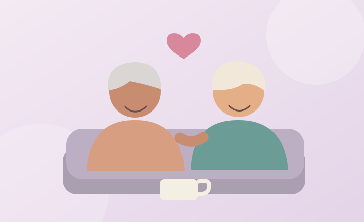

Cuida tus emociones.
Tu bienestar emocional importa tanto como tu salud física. Sentirte acompañado, escuchado y tranquilo también es cuidarte.
Ver consejos
No todo se trata de hacer más
Descansar, compartir con los demás y dedicar tiempo a lo que te gusta son formas valiosas de cuidar tu bienestar.
Cosas pequeñas que pueden ayudar
Conversa con alguien
Una llamada o una visita pueden fortalecer los vínculos.
Haz algo que disfrutes
Escuchar música, leer, pintar o cuidar plantas pueden ser buenas opciones.
Mantente conectado
Busca actividades en tu comunidad que sean cómodas para ti.
Dale espacio a tus sentimientos
Hablar sobre lo que sientes es una forma de cuidarte.
Si un día no te sientes bien
- Busca a alguien de confianza con quien puedas hablar.
- No te exijas estar bien todo el tiempo.
- Si la tristeza, ansiedad o el aislamiento persisten, pide apoyo profesional.
Si tú o alguien cercano está en peligro inmediato o tiene pensamientos de hacerse daño, solicita ayuda urgente a servicios de emergencia o atención de crisis de tu localidad.
Preguntas frecuentes
¿Es normal sentirse solo a veces?
Puede ocurrir. Si esa sensación es frecuente o afecta tu vida diaria, buscar apoyo puede ayudarte.
¿Qué pasa si me cuesta hablar de mis emociones?
Puedes comenzar con algo pequeño: una conversación breve, una nota o una cita con un profesional.
¿Tienes una pregunta?
Puedes escribirnos desde la página de contacto.